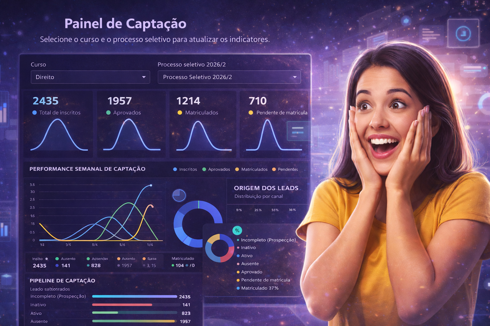

0
aumento médio na conversão de candidatos
Da primeira interação até a matrícula: sua equipe trabalha em um único fluxo com contexto completo, prioridades claras e ganhos reais de conversão.

aumento médio na conversão de candidatos
redução de tempo de resposta
menos retrabalho na operação comercial
jornada do candidato com rastreabilidade
Porque integra pessoas, processos e dados em um ambiente único de execução.
Identifique gargalos e pontos de evasão antes de perder candidatos.
Equipe alinhada com histórico, contexto e próximos passos sempre visíveis.
Dados de conversão por etapa para decisões estratégicas semanais.

Leads entram por múltiplos canais com padronização de registro.
Equipe prioriza e trata cada candidato com contexto real.
Status e acompanhamento estruturam o processo seletivo.
Mais controle da operação até matrícula e retenção inicial.
Além do fluxo ímpar de processo seletivo, o seu time ganha agilidade nos atendimentos com menções individuais ou em grupo, chat, agendamento, e indicadores integrados.
No próprio atendimento, você menciona uma pessoa ou um grupo para destravar pendências sem sair do contexto.

Conversas de equipe, candidatos e grupos no mesmo ambiente, com menos ruído e mais execução.

Organize próximos contatos com data, hora, tipo de atendimento e contexto do candidato.

Painéis atualizados em tempo real para acompanhar produtividade, conversão e evolução por etapa.
Sim. Estrutura multiusuário com colaboração por setores e visões por unidade.
Não. A implantação inclui treinamento prático e acompanhamento de adoção.
Sim. Dashboards e relatórios permitem análise de produtividade e conversão por etapa.
Sim. A equipe acompanha interessados, inscritos, classificados, matriculados e demais etapas definidas pela instituição.
Sim. O histórico centraliza contatos, observações, mudanças de status e próximos passos para evitar perda de contexto.
Sim. Podemos conectar fluxos de comunicação para agilizar respostas, lembretes e acompanhamento do candidato.
Sim. A operação pode trabalhar com responsáveis, filas, prioridades e visões por equipe ou unidade.
Sim. Os indicadores ajudam a acompanhar volume, produtividade, conversão por etapa e gargalos do processo seletivo.
Sim. É possível criar filtros e rotinas para identificar candidatos sem avanço, sem resposta ou próximos de abandonar o processo.
Sim. A gestão pode ser segmentada por campanha, curso, unidade, período de ingresso e outros critérios importantes.
Sim. Avaliamos as fontes de entrada e podemos integrar formulários, páginas de campanha e outros canais de captação.
O projeto pode incluir controle de acesso, rastreabilidade, organização de dados e boas práticas para tratar informações de candidatos com mais segurança.
Sim. Uma campanha piloto é uma boa forma de validar fluxo, equipe, indicadores e ajustes antes de ampliar o uso.
Deixe seus dados e receba uma demonstração focada no seu processo seletivo.